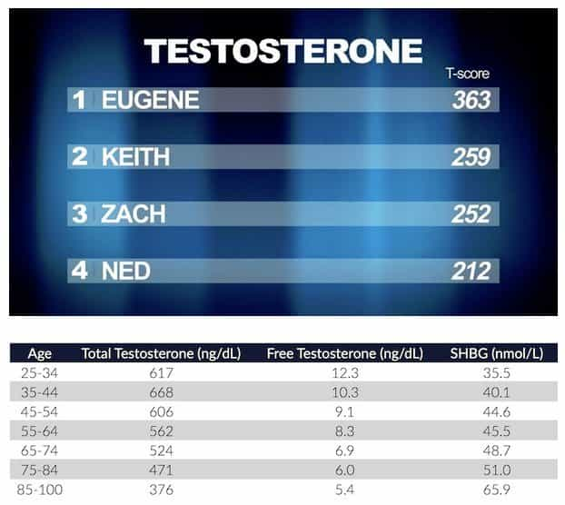

This account syndicates news from other media outlets.


What we’ve suspected has been confirmed by lab testing. Four writers at Buzzfeed got their testosterone checked and they are all lower than what you’d expect… for men in the 85-100 age bracket.

The average testosterone level for an American male is a range anywhere from 270 to 1070 ng/dL with an average level of 679 ng/dL.
When a crew from Buzzfeed got their testosterone levels checked as part of an investigation into male attractiveness, 3 out of 4 were apparently low.
Eugene, the Asian guy, was the only one of them to have normal testosterone levels, though he was on the low end of the normal range.
Studies have shown men who are physically strong are more likely to be right-wing, while weak men are more likely to be left-wing socialists.
The results are contained in this Buzzfeed video, which may be the gayest thing you see today.
Don’t Miss: 4 Common Items That Are Destroying Your Testosterone Levels